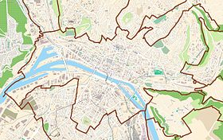
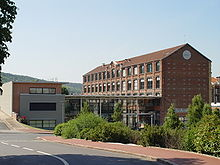

49° 27′ 36″ N 1° 04′ 01″ E (carte)
Université de Rouen
| Université de Rouen | |
|---|---|
| Informations | |
| Fondation | 1966 |
| Type | Université publique (EPSCP) |
| Régime linguistique | Français |
| Budget | 180,3 millions d'euros (2009) |
| Localisation | |
| Coordonnées | 49° 27′ 36″ Nord 1° 04′ 01″ Est |
| Ville | Mont-Saint-Aignan |
| Pays | France |
| Région | Haute-Normandie |
| Campus | Mont-Saint-Aignan Rouen - Pasteur Rouen - Martainville St-Étienne - Technopôle Evreux Elbeuf |
| Divers | |
| Affiliation | CESAR Normandie AeroEspace Normandie université |
| Site web | www.univ-rouen.fr |
|
Géolocalisation sur la carte : Rouen  |
|
L'université de Rouen est une université nationale française, basée à Rouen en Haute-Normandie.
Elle regroupe 6 UFR, 2 IUT et 3 instituts (IUFM, IAE, IPAG). Outre ses locaux basés à Rouen et son agglomération, elle possède plusieurs antennes universitaires à Évreux et Elbeuf. Sa population estudiantine est d'environ 24 000 étudiants.
Sommaire
Composantes
Unités de formation et de recherche
L'université compte 6 UFR, elles ont la charge de l'enseignement des étudiants de 1er et 2e cycle, et d'une partie des activités de recherche.
- UFR Droit, Sciences économiques et Gestion
- UFR Lettres et Sciences humaines
- UFR Médecine - Pharmacie
- UFR Sciences de l'homme et de la société
- UFR Sciences et Techniques
- UFR Sciences du sport et de l'éducation physique
Instituts d'enseignement

L'IUT de Rouen à Elbeuf
L'université compte quatre instituts chargés d'enseignement, dont deux IUT.
- IUT de Rouen
- IUT d'Évreux
- Institut d'administration des entreprises
- Institut de préparation à l'administration générale
Écoles doctorales
L'université est habilitée pour six écoles doctorales. Elles ont la charge de la formation et du suivi des étudiants de troisième cycle.
- ED Normande de Chimie ED 508
- ED normande de Biologie intégrative, Santé, Environnement
- ED Sciences Physiques, Mathématiques et de l'Information pour l'ingénieur
- ED Sciences humaines et sociales : Savoirs, Critique, Expertises
- ED Économie Gestion Normandie
- ED Droit Normandie
Annexes
Bibliographie
- Anne Bidois, L'Université à Rouen, no 28, collection histoire(s) d'agglo, Agglomération de Rouen, 2006 (ISBN 2-913914-69-1)
- Comité national d'évaluation, L'université de Rouen, rapport d'évaluation, Paris, 1998, 140 p.
Liens externes
- (fr) Université de Rouen